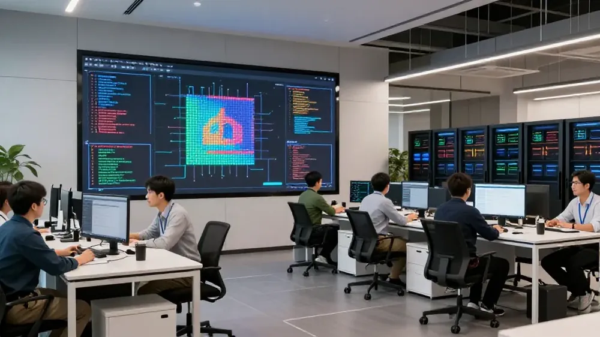
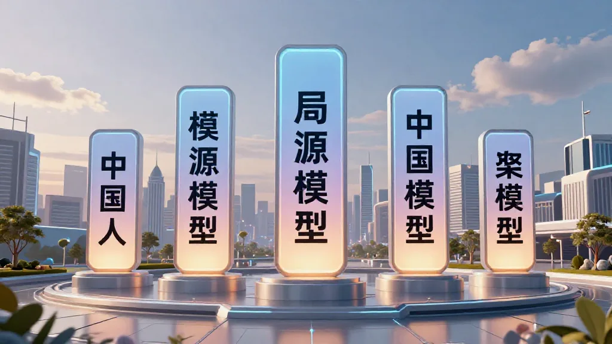
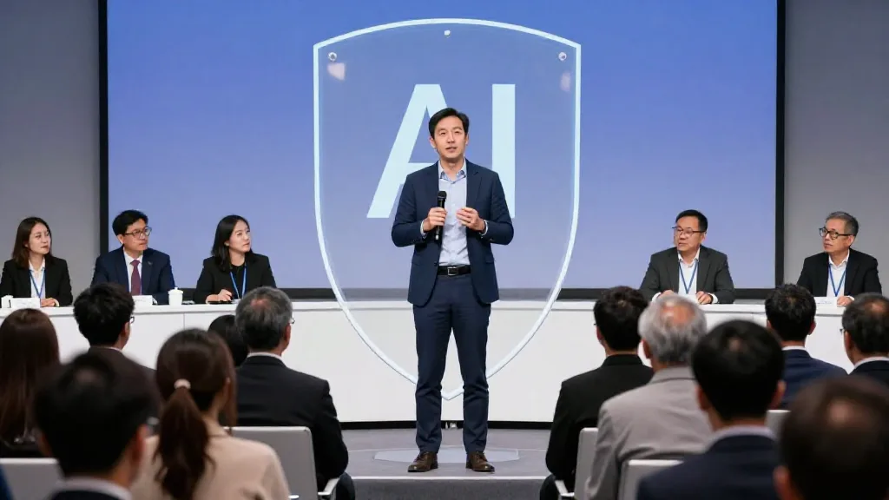
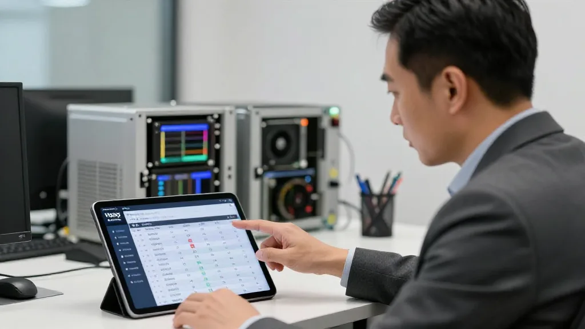

【郑哥点评】
今日睇到AI资讯，我喺度坐唔住。2026年9月AI圈发生咗三件大事：Meta Muse Spark 1.3三天登顶、国产大模型包揽OpenRouter前六、Anthropic CEO呼吁放慢前沿AI。表面各自独立，实际上指向同一个真相：AI时代嘅权力转移，已经开始。
一、Meta Muse Spark 1.3 三天登顶
2026年9月2日发布，三天冲上AIHOT排行榜榜首，104.8万token上下文（接近无限记忆），一年内三代连发1.1到1.3。
Meta一直俾人话「开源不如闭源」、「Llama时代慢半拍」，但今次Muse Spark 1.3三天登顶，彻底打破呢个印象。开源选择更多、价格战继续、闭源压力加大。

圖片由 AI輔助創作（Z-Image-Turbo）
二、国产大模型包揽OpenRouter前六
OpenRouter月度榜单7月31日：
- 1. MiMo-V2.5（小米）
- 2. DeepSeek V4 Flash（深度求索）
- 3. HY3（腾讯）
- 4. MiniMax M3（MiniMax）
- 5. GLM-5.2（智谱）
- 6. DeepSeek V4 Pro（深度求索）
全部中国开源模型。MiMo-V2.5两个月调用量+616%，中国开源下载量占全球41%，超过美国。Hugging Face事件里，闭源模型OpenAI求助失败，最终靠GLM-5.2完成取证分析，「从可用到好用」嘅标志性事件。
中国AI嘅开源生态，已经走向世界前列。算力需求转向国产芯片，跨境电商用中国AI工具提升国际竞争力，GLM-5.2可以低成本处理多语言客服。

圖片由 AI輔助創作（Z-Image-Turbo）
三、Anthropic CEO呼吁放慢前沿AI
2026年9月12日，Anthropic CEO Dario Amodei发表文章，主张业界放慢最前沿AI推进节奏，接受更强外部评估，警告未来6到12个月可能出现大批自主Agent干扰互联网。Anthropic愿意给外部评估人员接近员工级别嘅系统存取权。
OpenAI亦提醒，旧模型写得越长嘅Prompt同Skill规则，可能反而限制新模型嘅表现，系统性遗留债务成为业界焦点。AI安全唔再系理论，系业界共识。

圖片由 AI輔助創作（Z-Image-Turbo）
四、三件事指向同一个真相
真相1：AI权力转移已经开始，头部4家正在重新洗牌，中国开源走向世界前列，未来3年权力从闭源巨头转向开源生态加国产。真相2：AI迭代速度惊人，9月单月8款以上新模型，每家公司3到6个月一次大版本，3年内模型会完全不一样。真相3：AI安全成为新赛道，业界主动放慢，外部评估机制建立。

圖片由 AI輔助創作（Z-Image-Turbo）
五、对鄭哥4大业务嘅具体影响
AI算力方面，更多模型等于更多算力需求，国产模型崛起令华为昇腾、寒武纪订单增加，HBM涨价令服务器成本+5到10%。部署建议：提供多模型支持、国产芯片加国产模型组合方案、安全合规咨询。
电子消费品方面，AI翻译耳机升级、智能手表AI助手更智能、AI眼镜实时翻译。跨境电商方面，GLM-5.2处理多语言客服成本低、Muse Spark生成产品描述、DeepSeek V4 Pro做数据分析。年轻人投资方面，睇国产模型公司、AI安全公司、AI算力公司。
六、70后嘅AI时代洞察
我哋呢代做贸易26年，见过太多技术革命：1995互联网、2000移动通讯、2008智能手机、2015 O2O、2020直播电商、2026 AI Agent。2026年嘅AI革命，70后唔系被动接受，系主动主导。
七、鄭哥嘅三大判断
判断1：开源加国产等于未来3年主流，闭源太贵、开源够用、国产已经崛起，呢个系我哋呢代人嘅机会。判断2：AI安全等于新蓝海，监管、合规、隐私，AI安全服务会成为大生意。判断3：Agent时代等于算力时代，未来6到12个月会有大批自主Agent，算力需求会爆炸性增长，HBM涨价5到7倍已经反映呢个趋势。
八、海哥嘅建议
对AI公司：多模型支持、国产加国际双线、安全合规优先。对投资者：国产模型公司、AI安全公司、算力公司。对年轻人：学AI工具Muse Egg、GLM-5.2，入行AI应用唔系入行AI研发，关注AI安全新赛道。
2026年9月嘅AI三件大事，唔系新闻，系未来10年嘅预告。Meta反击加国产崛起加安全争议，三个趋势指向同一个未来：AI嘅权力正在从美国闭源巨头转向全球开源生态加中国力量。我哋呢代70后，由电子产品到AI算力，见证紧呢个权力转移嘅每一步。你呢，准备好未？
合作联系 WhatsApp: +852 6641 7912 · 七善門科技 · 星辰算力
本文参考：2026年9月AI圈新闻、Meta/Anthropic官方信息、OpenRouter月度榜单、CFM闪存市场、央广网等公开报道。
[Hany's take]
I saw the AI news today and could not sit still. Three big things happened in AI in September 2026: Meta Muse Spark 1.3 topped the charts in three days, Chinese models swept the top six on OpenRouter, and Anthropic's CEO called for slowing down frontier AI. On the surface they are unrelated, but they point at the same truth: the power shift in AI has already begun.
1. Meta Muse Spark 1.3 tops the chart in three days
Released on 2 September 2026, it shot to the top of the AIHOT leaderboard in three days, with a 1.048 million token context window (close to unlimited memory), and three generations shipped inside one year, from 1.1 to 1.3.
Meta was always told that "open source loses to closed source" and that it was half a step slow in the Llama era. But this time Muse Spark 1.3 topping the chart in three days smashed that impression completely. More open-source choices, the price war continues, and more pressure on closed models.
2. Chinese models sweep the top six on OpenRouter
OpenRouter's monthly leaderboard on 31 July:
- 1. MiMo-V2.5 (Xiaomi)
- 2. DeepSeek V4 Flash (DeepSeek)
- 3. HY3 (Tencent)
- 4. MiniMax M3 (MiniMax)
- 5. GLM-5.2 (Zhipu)
- 6. DeepSeek V4 Pro (DeepSeek)
All of them Chinese open-source models. MiMo-V2.5's call volume rose 616 per cent in two months, and China accounts for 41 per cent of global open-source downloads, ahead of the United States. In the Hugging Face incident, the closed-source model OpenAI asked for help and failed, and the forensic analysis was eventually finished with GLM-5.2 — a landmark moment in the shift "from usable to genuinely good".
China's open-source AI ecosystem is already up with the world's leaders. Compute demand is turning to domestic chips, cross-border sellers are using Chinese AI tools to raise their international competitiveness, and GLM-5.2 can handle multilingual customer service at low cost.
3. Anthropic's CEO calls for slowing down frontier AI
On 12 September 2026, Anthropic CEO Dario Amodei published an article arguing that the industry should slow the pace of the most frontier AI work and accept stronger external evaluation, warning that in the next six to twelve months there could be a large number of autonomous agents disrupting the internet. Anthropic is willing to give external evaluators system access close to employee level.
OpenAI also warned that long prompts and skill rules written for older models may actually limit what new models can do, and systemic legacy debt has become a focus for the industry. AI safety is no longer theory. It is an industry consensus.
4. Three events, one truth
Truth one: the AI power shift has started. The top four are being reshuffled, Chinese open source has moved up with the world's leaders, and over the next three years power moves from the closed-source giants to the open-source ecosystem plus domestic players. Truth two: the pace of iteration is frightening — more than eight new models in September alone, a major release every three to six months from each company, and in three years the models will be completely different. Truth three: AI safety has become a new track, the industry is deliberately slowing down, and external evaluation mechanisms are being built.
5. What it means for Hany's four businesses
On AI compute, more models mean more compute demand. The rise of domestic models lifts orders for Huawei Ascend and Cambricon, and HBM price rises add 5 to 10 per cent to server costs. Deployment advice: offer multi-model support, a combined domestic-chip-plus-domestic-model package, and safety and compliance consulting.
On consumer electronics: AI translation earbuds get an upgrade, smartwatch AI assistants get smarter, and AI glasses do real-time translation. On cross-border e-commerce: GLM-5.2 handles multilingual customer service cheaply, Muse Spark generates product descriptions, and DeepSeek V4 Pro does data analysis. For young people investing: look at domestic model companies, AI safety companies and AI compute companies.
6. A 1970s-born view of the AI era
My generation has done trade for 26 years and seen too many technology revolutions: the internet in 1995, mobile communications in 2000, the smartphone in 2008, O2O in 2015, livestream e-commerce in 2020, AI agents in 2026. In the 2026 AI revolution, people born in the 1970s are not passively accepting it — we are actively leading it.
7. Hany's three judgements
Judgement 1: open source plus domestic equals the mainstream for the next three years. Closed source is too expensive, open source is good enough, and domestic models have already risen — this is the opportunity for our generation. Judgement 2: AI safety equals a new blue ocean. Regulation, compliance, privacy — AI safety services will become a big business. Judgement 3: the agent era equals the compute era. In the next six to twelve months there will be large numbers of autonomous agents, compute demand will explode, and HBM going up five to seven times already reflects that trend.
8. Hany's suggestions
For AI companies: multi-model support, a domestic plus international dual track, and safety and compliance first. For investors: domestic model companies, AI safety companies, compute companies. For young people: learn AI tools such as Muse Egg and GLM-5.2, and get into AI applications rather than AI research — and watch the new AI safety track.
The three big AI events of September 2026 are not news. They are a preview of the next ten years. Meta's counterattack, the rise of domestic models and the safety debate — three trends pointing at one future: AI power is moving from the closed-source giants in the United States to the global open-source ecosystem plus Chinese strength. My generation, born in the 1970s, has gone from electronics to AI compute, and we are watching every step of that power shift. So — are you ready?
Business enquiries WhatsApp: +852 6641 7912 · Qishanmen Tech · Star Compute
Sources: September 2026 AI industry news, official Meta and Anthropic information, the OpenRouter monthly leaderboard, CFM flash memory market, CNR and other public reports.